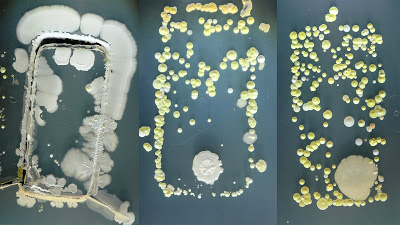
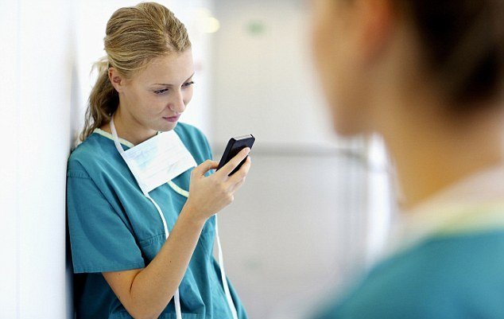
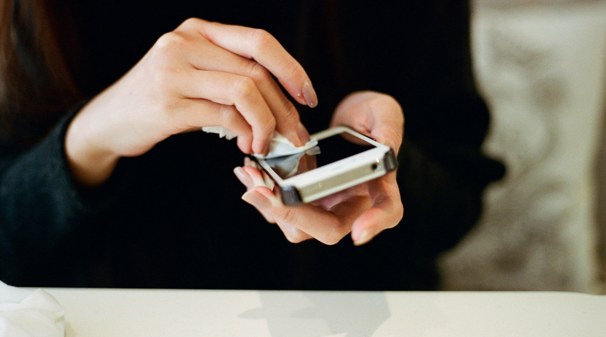

Зараза на телефоні та коли лікар небезпечний для пацієнта
Що ж там таке страшне живе?
Та все, що завгодно! На поверхні телефону – сліди від ваших (а іноді і не тільки) пальців, волога, жир і піт від ваших скронь, вух і волосся, залишки їжі і бруду, маленькі часточки всіх місць, де ви сьогодні і не лише сьогодні побували. Це все само по собі є джерелом мікробного забруднення та слугує багатим середовищем для розмноження та гарного виживання бактерій. Додамо ще, що телефони самі по собі трохи нагріваються, та і зберігаємо ми їх в теплих умовах, тому підтримуватися в життєздатному стані мікроорганізми можуть там довго.
Не будемо вдавати у цифри (все одно Ви їх не запамʼятаєте, та і, в даному випадку, то не надто важливо), просто повірте, мікроорганізмів там багато. Цікаво, що за деякими даними для телефонів, які належать чоловікам, характерне вище мікробне забруднення, ніж для дамських девайсів (упс! :))(1). Також, що очікувано, кнопкові телефони містять більше мікрооргнізмів, ніж сенсорні екрани. Але печаль не в кількості мікроорганізмів, а тому, що часто серед них присутні патогени. Це і антибіотикорезистентні стафілококи із стрептококами (особливо відомі своїми темними ділами в медичних закладах – для післяопераційних хворих та пологових будинків це часто як смертний вирок), патогенні штами кишкової палички (це не лише ознака фекального забруднення, а й високий ризик гострого кишкового отруєння), псевдомонади та протеї (разом із стафілококами і кишковою паличкою можуть виступати збудниками як кишкових інфекцій, так і шкірних), клебсієла (така люта животінка, яка може поселятися в носі, спричинювати неприємний запах подиху, а в подальшому – втрату нюху), ну і всякі там віруси, наприклад, грипу, тощо (2, 3, 4, 5, 6)

А до чого тут лікарі?
Мобільні телефони лікарів у деяких випадках можуть бути джерелом смертельних інфекцій. У вище згаданих джерелах, а також ще в кількох десятках тисяч досліджень на цю тему говориться, що мобільні телефони лікарів виступають вектором розповсюдження внутрішньолікарняних інфекцій. Це, в першу чергу, найактуальніше для хірургічних, інфекційних відділень, та пологових будинків, де внутрішньолікарняні інфекції часто можуть бути питанням життя і смерті. А згадайте Ваш останній візит до дантиста! Хтось із вас точно був свідком того, як лікар відповідав на телефонний звінок у рукавиці, якою щойно копирсався у Вашому зубі. Звісно, хірург під час операції, а також будь-який лікар, який дотримується протоколу стерильності, під час проведення маніпуляцій, собі таке не дозволить. Але в інший час медики, як і будь-які живі люди, відповідають на звінки та повідомлення - рухаючись від палати до палати, торкаючись дверних ручок та інших поверхонь, перебуваючи в епіцентрі потенційного розвитку і спалаху нозокоміальної інфекції.
У багатьох клініках світу вже вступили в дію рекомендації та правила дезінфекції мобільних телефонів в лікарняних закладах. І вони стосуються не лише медиків, а й відвідувачів (7, 8, 9, 10).
А нам поки лише залишається сподіватися на знання та совість наших лікарів.

Що з цим робити?
Відповідь – приділяти увагу гігієні свого смартфону. Це передбачає щоденне його очищення, коли повертаєтесь додому. Це – як мити руки і чистити зуби, бо якщо цього не робити, то миття рук, по великому рахунку, не має особливого сенсу. Питання – як саме?
На сьогодні вже існують готові рішення – від дезінфікуючих серветок для техніки до спеціальних ультрафіолетових кейсів, які можна використовувати також і для гаманців та годинника. Для прикладу, в ось цих дослідженнях порівнювали ефективність різних дезінфектантів для мобільних пристроїв (11). У цілому – найефективнішими є ультрафіолетові бокси, далі – спиртовмісні дезінфектанти, четвертинні амонійні, хлорвмісні і на останньому звичайні серветки, що просто очищують пристрій, хоч і не мають дезінфікуючої активності. Істотною перевагою ультрафіолетових боксів є щадна дія по відношенню до поверхні телефону за рахунок відсутності контакту з рідиною. Недолік – висока вартість – від 40 до 100 дол. Тому доступнішим рішенням може бути спиртовмісний дезінфікуючий засіб, спрей чи серветки, наприклад на основі ізопропілового спирту. Ним можна протирати свій телефон в той самий час, як миєте руки при поверненні додому. Це надасть також і охайнішого вигляду Вашому мобільному пристрою. Окрім того, він відносно малою мірою ушкоджує матеріали, з яких виготовлений корпус. В осінньо-зимовий час така процедура додатково зменшуватиме ризик захворіти на грз. Про те, яких до яких ще заходів варто вдаватися з цією ціллю, можна почитати в іншому нашому дописі на цю тему.
А якщо принципово не користуєтеся дезінфектантами (хоча якраз в цьому випадку їх використання може бути цілком виправданим), очищуючі серветки - точно кращі, ніж нічого!
